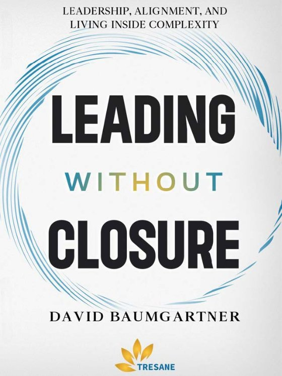

We help leaders build teams that actually own the work,
so the leader can lead instead of carry.
Most leaders we work with are not struggling because they lack skill or commitment.
They are struggling because the weight of holding the organization together has become theirs alone to carry. Every decision, every alignment gap, every dropped handoff, it all lands on them.
That is not a leadership failure. It is a systems problem. And it is solvable.
"Weight isn't removed.
It is seen differently. Leaders name what matters and carry it with more clarity, steadiness, and confidence."
There is no universal playbook. But there is a clearer way of seeing leadership. We work across three domains, because alignment in all three is where real change holds.
Align Self. Clarity of values, identity, and purpose. Leaders who know what grounds them can hold pressure without being consumed by it.
Align Relationships. Respect, curiosity, and trust. How a leader connects with others decides how much of the work moves without them pushing it.
Align Teams. Shared purpose, systems, and accountability. Teams that own the work together free the leader to lead instead of managing every detail.
Align self is the foundation, which is not the same as the starting line. The three interlock and feed each other, so a team can enter wherever the pressure actually is.
WeQ is collective intelligence. IQ is what one person knows. EQ is how well they read themselves and others. WeQ is what a group is able to think, decide, and do together.
It is a learning model rather than a score, and it is the whole of how we work. A team gets better at thinking together by practicing it, which is why we call the work collective learning.
A scorecard shows where alignment is strong, where it is creating drag, and what a few targeted shifts could unlock.
Explore WeQThe same four beats every time, at whatever tempo the team can keep, with WeQ at the center. It is the cycle that builds the capability, not any one trip through it.
1 System. The current approach, described honestly. The best guess the team is running on right now.
2 Experience. How it landed for the people inside it, which is rarely the same as the intent.
3 Scorecard. What the picture actually shows, measured on what matters rather than what is easy to count.
4 Learn & Adapt. Reflect, adjust, begin again. The next pass starts from a stronger foundation.
A scorecard is the team’s current picture. What the team does next begins the cycle again.
See how a team runs the cycle"I didn't need just strategies, I needed perspective. I began thinking differently about my role, my influence, and how I carry it all. The support didn't remove the weight; it helped me carry it differently."
"I love to live in a logical place, and it was mind-blowing to uncover the biases that led me to think that I was living in a logical place when, in reality, I was living in an avoidance place. I worked through some of those thought chains and have the tools to do the work."
"The improved confidence I have in my ability to lead is a result of this program. I feel that I could step into a leadership role and have the tools required to be successful."

Leadership, Alignment, and Living Inside Complexity
This book outlines the perspective that shapes everything we do at Tresane. It explores how leaders align self, relationships, and teams in environments that do not slow down.
It is a practical entry point into the Tresane Model® and serves as shared language for many of our cohorts and organizational partners.
Find It on AmazonTresane helps leaders understand the environment they are operating in and lead through it with intention, not away from it.
Headquartered in Central Kentucky, we work with leaders across industries and regions. Our work blends more than 30 years of experience in HR, leadership development, and organizational change with a deep commitment to the communities where we live and lead.
In an era of accelerating technology and AI-supported tools, clarity of thinking, environmental awareness, and relational intelligence matter even more. Tools evolve. Human judgment anchors the work.
Bringing Workplaces Together®. One Leader, One Team at a Time
Founder, Tresane LLC
David brings over 30 years of experience in HR, leadership development, and organizational change. He blends business strategy with human insight to help leaders align values, relationships, and team dynamics.
A published author with senior HR and advanced team-coaching credentials, David helps leaders show up with clarity, curiosity, and presence, even in challenge, and build leadership systems that hold.
Grounded in reflection, experience, and research-informed practice, every engagement blends insight with action. We don't remove the weight leaders carry. We help them see it clearly, hold it intentionally, and trust it will hold.
Questions? information@tresane.com · (866) 982-5837